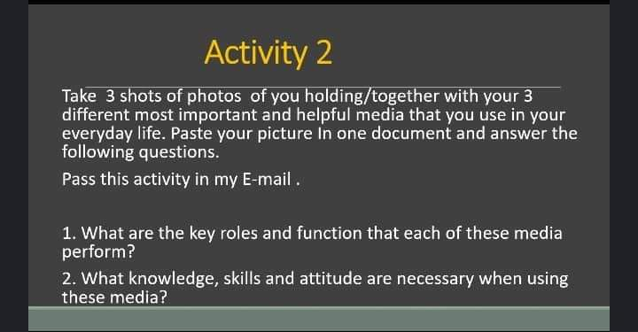

Activity 1
1. because it helps you to make a decision properly on your own and you can think about media and information without help of someone else.
2. they are important because of media we can communicate to others and we can communicate to long distance like relationship or emergency .
3. media and information help to create a research and they can use to a new technology.

Activity 2
Media that i can use in everyday life.
•Youtube
1. this is social media platform that can useful for education,movies,music, and etc...
2. because of this we can learn without anything can to teach me, maybe boring but very helpful for everyday life
•Messenger
1. this is social media platform are useful for Video call, Phone call, and Messages
2. messenger help me to communicate to others and useful because of this it easy to communicate
• Televison
1. this is media that can help about country and more..
2. because of this may I know the information in the country